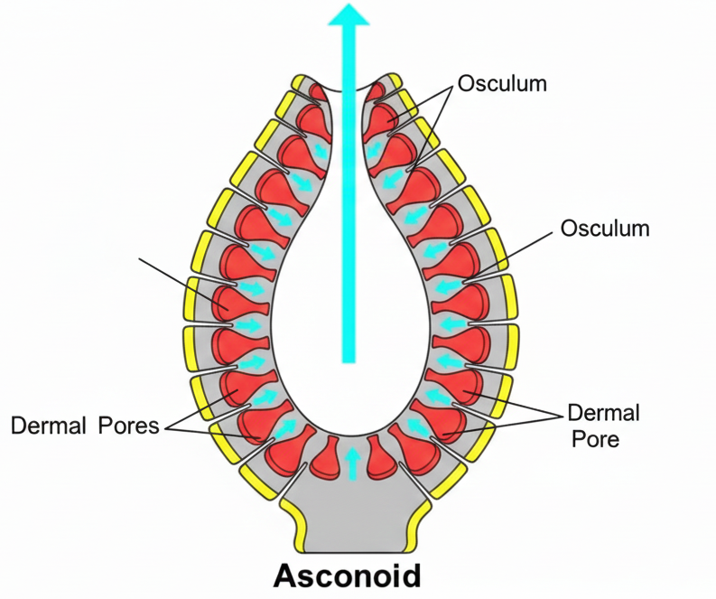
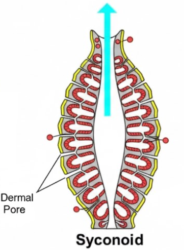
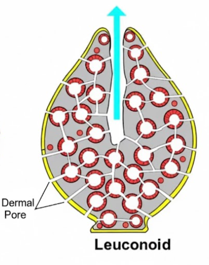

Introduction
- Primitive aquatic animals inhabiting environments from shallow to deep waters (8,500m+)
- Feed by filtering water through a system of canals
- Body composed of archaeocytes, pinacocytes, and collencytes
- Water canal system variations: ascon, sycon, and leucon
- Skeleton is made of mineral spicules or spongin
- High capacity for regeneration
Taxonomic Hierarchy
Calcarea
Calcareous spicules
Hexactinellida
Glass sponges
Demospongiae
Spongin fibers
Homoscleromorpha
True tissue layer
Classified primarily based on the chemical composition and shape of their spicules.
Class Calcarea
- Skeleton composed of calcium carbonate spicules.
- Body form may be vase-shaped, thin tubular networks, or irregular and massive.
- Mostly small-sized sponges.
- Inhabit shallow waters of all seas, from intertidal zones to about 200 m.
- Some species occur as deep as 800 m.
- Approximately 300 species are known.
Class Hexactinellida
- Skeleton is distinctively composed of six-rayed siliceous spicules (slilca).
- They are exclusively marine and typically inhabit deep waters, ranging from 25 to 8,500 m.
- Most species attach to hard substrates, but some are found in soft sediments.
- Key examples include Hexactinella, Euplectella (Venus' flower basket), and Farrea.
- Approximately 500 species are known in this class.
Class Demospongiae
- Skeleton: Silica spicules, spongin fibers, or both; some lack a skeleton.
- Largest class: Comprises about 80-90% of all sponges (~4,200 species).
- Found in shallow to very deep waters (down to 5,500 m).
- Includes the freshwater sponges (Family: Spongillidae).
- Highly variable: From small patches to massive structures over 2 m wide.

Class Homoscleromorpha
- Skeletal absent or made up of simple siliceous spicules
- Exclusively marine sponges
- Mostly found in shallow coastal waters, attached to hard substrates
- Body form small, thin, encrusting, or cushion-like
- Have true epithelial tissues with a basement membrane to indicate advanced cellular organization
- Canal system is leuconoid
- Comprises approximately 100 species
Key Features Summary
Distinctive characteristics of Phylum Porifera
Organization
Cellular level only. No true tissues or organs.
Pore System
Ostia (Inlet)
Osculum (Outlet)
Respiration
Diffusion via the general body surface.
Lifestyle
Sessile (fixed) with Holozoic nutrition.
Reproduction
Asexual (Budding/Gemmules) & Sexual.
Symmetry
Mostly Asymmetrical; some radial.
Body Plan Complexity
Simplest tube-like design with a central spongocoel.
Folded walls and radial canals increase surface area.
Most complex system with highly efficient flagellated chambers.
Specialized Cells
The functional building blocks of a sponge
Choanocytes
"Collar Cells" with whip-like flagella that circulate water and trap food particles.
Amoebocytes
Mobile cells that digest food, deliver nutrients, and can transform into other cell types.
Pinacocytes
Leathery, plate-like cells that form the "skin" and regulate the sponge's surface area.
Reproduction
Asexual
- Budding: Small growths drop to form clones.
- Fragmentation: Broken pieces regenerate.
- Gemmules: Internal buds for survival.
Sexual
- Hermaphroditic: Dual reproductive organs.
- Larvae: Swimming stage (Parenchymula).
- Fertilization: Water-borne sperm transfer.
Diversity Summary
The Four Pillars of Phylum Porifera
Calcarea
Lime Sponges: Calcium carbonate spicules. Small, vase-shaped, and found in shallow waters. (e.g., Sycon)
Hexactinellida
Glass Sponges: Six-rayed silica skeletons. Exclusively marine and found in deep-sea habitats.
Demospongiae
Largest Group: Silica or spongin fibers. 90% of all species. Includes both marine and freshwater sponges.
Homoscleromorpha
Advanced Tissues: Simple silica spicules. Unique for having a true basement membrane and leuconoid systems.
Ecological & Economic Importance
Why Sponges Matter to the World
Natural Filters
Sponges process thousands of liters of water daily, removing bacteria and toxins to keep reefs clean.
Marine Shelters
They provide complex 3D structures that serve as homes for crabs, shrimp, and small fish.
Bio-Medicine
Source of bioactive compounds used in cancer research and anti-viral drugs.
Commercial Value
Sustainable harvesting for natural bath sponges and traditional decorative industries.
Do you know?
1. What is the maximum lifespan of a sea sponge?
2. Why porifera are called "Ocean's Giant Vacuum"
3. How porifera regulate their body perhaps they don't have brain?
Thank You!
Submitted To
Mr. Devendra P. Dhakal
Department of Zoology
Presented By